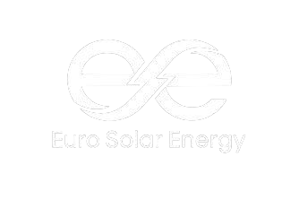
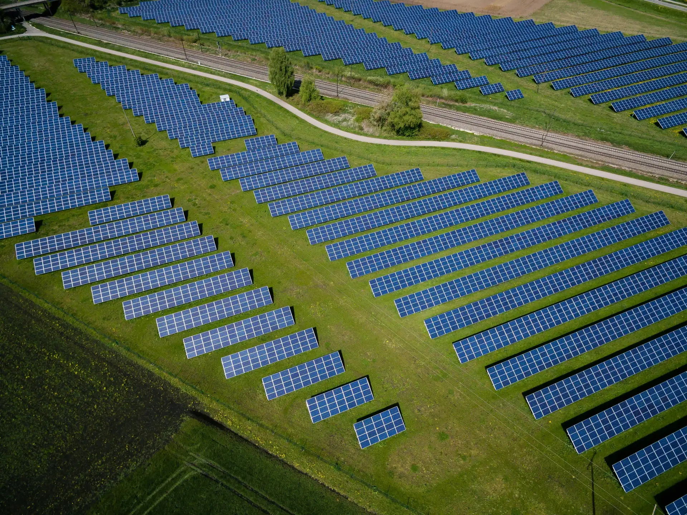
Immediate Operations, Secured Revenue Stream, Scalable Asset BaseLaufender Betrieb, gesicherte Einnahmequelle, skalierbare Anlagenbasis
Acquisition of a single holding company owning 40 fully operational KÁT-eligible solar parks in Hungary, offering immediate, stable, state-backed cash flows in a closed, premium asset class.Erwerb einer einzigen Holdinggesellschaft, die 40 voll funktionsfähige KÁT-fähige Solarparks in Ungarn besitzt und sofortige, stabile, staatlich gedeckte Cashflows in einer geschlossenen, erstklassigen Anlageklasse bietet.
Fixed tariffs guaranteed for up to 20 yearsFeste Tarife für bis zu 20 Jahre garantiert
Corporate structure supports efficient portfolio growthDie Unternehmensstruktur unterstützt ein effizientes Portfoliowachstum
Generating revenue from day oneErwirtschaftet vom ersten Tag an Einnahmen
Lower O&M and balancing costs, bulk discountsNiedrigere Betriebs- und Ausgleichskosten, Mengenrabatte
65% equity stake in Euro Solar Energy Zrt.65%ige Kapitalbeteiligung an Euro Solar Energy Zrt.
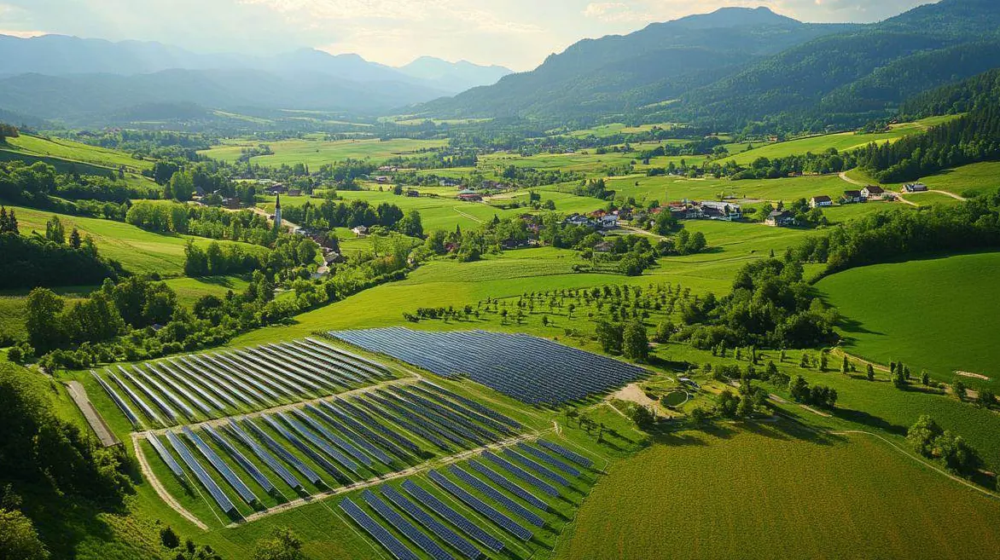
The KÁT system (Mandatory Off-Take Tariff) was introduced in 2007 as a government-backed renewable energy support scheme. It mandates the purchase of renewable energy at fixed tariffs, ensuring long-term financial stability and predictable revenue streams for producers.Das KÁT-System (verpflichtende Einspeisevergütung) wurde 2007 als staatlich gefördertes System zur Unterstützung erneuerbarer Energien eingeführt. Es schreibt die Abnahme von erneuerbaren Energien zu festen Tarifen vor und sorgt so für langfristige finanzielle Stabilität und vorhersehbare Einnahmeströme für die Erzeuger.
Guaranteed Offtake:Garantierte Abnahme:
Renewable energy producers sell electricity at fixed tariffs for 20-25 years, eliminating market and price risks.Erzeuger erneuerbarer Energien verkaufen Strom zu festen Tarifen für 20-25 Jahre, wodurch Markt- und Preisrisiken ausgeschlossen werden.
Long-Term Security:Langfristige Sicherheit:
Designed to attract large-scale investments in solar and biomass energy with minimal risk exposure.Konzipiert, um Großinvestitionen in Solar- und Biomasseenergie mit minimalem Risiko anzuziehen.
Regulatory Stability:Regulatorische Stabilität:
Legal protections against retroactive changes ensure investor confidence.Der rechtliche Schutz vor rückwirkenden Änderungen sichert das Vertrauen der Investoren.
Historically Increasing Tariffs:Historisch steigende Tarife:
Over the past years, KÁT tariffs have consistently increased, often outperforming free market prices. While inflation indexing is temporarily suspended, tariffs will rise if inflation exceeds 6% annually, and current rates remain highly competitive compared to alternative schemes.In den vergangenen Jahren sind die KÁT-Tarife kontinuierlich gestiegen und lagen oft über den Preisen des freien Marktes. Auch wenn die Inflationsindexierung vorübergehend ausgesetzt ist, werden die Tarife steigen, wenn die Inflation 6 % pro Jahr übersteigt, und die derzeitigen Tarife bleiben im Vergleich zu alternativen Systemen äußerst wettbewerbsfähig.
*Includes the KÁT surcharge, adjusted monthly by MAVIR to balance the difference when market prices fall below fixed KÁT tariffs. MAVIR acts as a neutral intermediary, ensuring full cost coverage without profit. All consumers pay this, regardless of energy source (Wattler.eu, 2024)*Enthält den KÁT-Zuschlag, der monatlich von MAVIR angepasst wird, um die Differenz auszugleichen, wenn die Marktpreise unter die festen KÁT-Tarife fallen. MAVIR fungiert als neutraler Vermittler, der eine vollständige Kostendeckung ohne Gewinn gewährleistet. Alle Verbraucher zahlen diese Gebühr, unabhängig vom Energieträger (Wattler.eu, 2024)
Since 2016, no new projects can enter the KÁT system, making existing parks a rare and highly valuable investment opportunity with guaranteed returns. In recent years, the fixed KÁT tariff has repeatedly outperformed* the average market price, offering a clear financial edge.Seit 2016 können keine neuen Projekte mehr in das KÁT-System aufgenommen werden, was bestehende Parks zu einer seltenen und äußerst wertvollen Investitionsmöglichkeit mit garantierter Rendite macht. In den letzten Jahren hat der feste KÁT-Tarif den durchschnittlichen Marktpreis wiederholt übertroffen* und bietet einen klaren finanziellen Vorteil.
| CriteriaKriterien | KÁT | METÁR | Corporate PPA |
|---|---|---|---|
| Government SupportStaatliche Unterstützung | Full (Fixed Tariff)Vollständig (fester Tarif) | Auction-based PremiumAuktionsbasierte Prämie | NoneKeine |
| Price StabilityPreisstabilität | 20-25 years (Fixed)20-25 Jahre (fest) | Partial (Market-linked)Teilweise (marktabhängig) | Variable (Contractual Terms)Variabel (Vertragsbedingungen) |
| Investment Risk ProfileInvestitionsrisikoprofil | Low (state-backed)Niedrig (staatlich gestützt) | Medium (auction design risks)Mittel (Auktionsrisiken) | Variable (counterparty risks)Variabel (Marktrisiken) |
| Financial PredictabilityFinanzielle Vorhersagbarkeit | HighHoch | MediumMittel | Contract-dependentVertragsabhängig |
KÁT entitlements have consistently remained stable since their introduction, offering long-term security for producers. Protected by EU legislation, existing support schemes cannot be retroactively altered in ways that undermine economic viability. In case of regulatory changes, alternative schemes such as PPAs provide a viable option.Die KÁT-Vergütungen sind seit ihrer Einführung stets stabil geblieben und bieten den Erzeugern langfristige Sicherheit. Da sie durch EU-Rechtsvorschriften geschützt sind, können die bestehenden Förderregelungen nicht rückwirkend in einer Weise geändert werden, die die wirtschaftliche Existenz untergräbt. Im Falle von Änderungen der Rechtsvorschriften bieten alternative Regelungen wie PPA eine praktikable Option.
*Based on HUDEX and MAVIR data, the fixed KÁT tariff exceeded the average Hungarian wholesale market electricity price in 2021, 2023, and 2024, highlighting its relative financial advantage in volatile market conditions.*Auf der Grundlage von HUDEX- und MAVIR-Daten lag der feste KÁT-Tarif in den Jahren 2021, 2023 und 2024 über dem durchschnittlichen ungarischen Großhandelsstrompreis, was seinen relativen finanziellen Vorteil unter volatilen Marktbedingungen verdeutlicht.
Hungary’s renewable capacity has surpassed 7.5 GW*, over 3 GW of which is under the KÁT scheme. This support mechanism was key to unlocking the solar boom — without it, investment levels would have remained far lower. Solar dominates recent capacity additions.Die ungarische Kapazität an erneuerbaren Energien hat 7,5 GW* überschritten, wovon mehr als 3 GW auf das KÁT-Programm entfallen. Dieser Fördermechanismus war der Schlüssel zur Auslösung des Solarbooms – ohne ihn wäre das Investitionsniveau weitaus niedriger geblieben. Die Solarenergie dominiert den jüngsten Kapazitätszuwachs.
Installed capacity and distribution of KÁT power plants (2023–2024)Installierte Kapazität und Verteilung der KÁT-Kraftwerke (2023–2024)
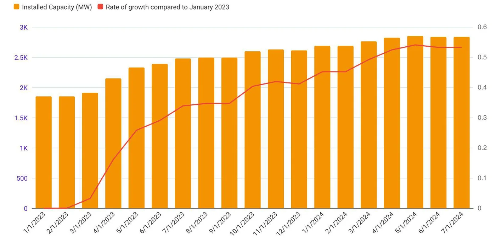
The installed capacity of solar panel systems in HungaryDie installierte Kapazität von Solarpanelsystemen in Ungarn
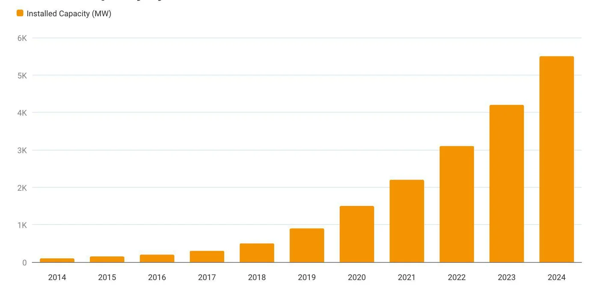
*Data cited in: vg.hu, referencing the Hungarian Ministry of Energy, 2025*Daten zitiert in: vg.hu, unter Bezugnahme auf das ungarische Energieministerium, 2025
Cash flow to equity over 10 yearsCashflow zum Eigenkapital über 10 Jahre
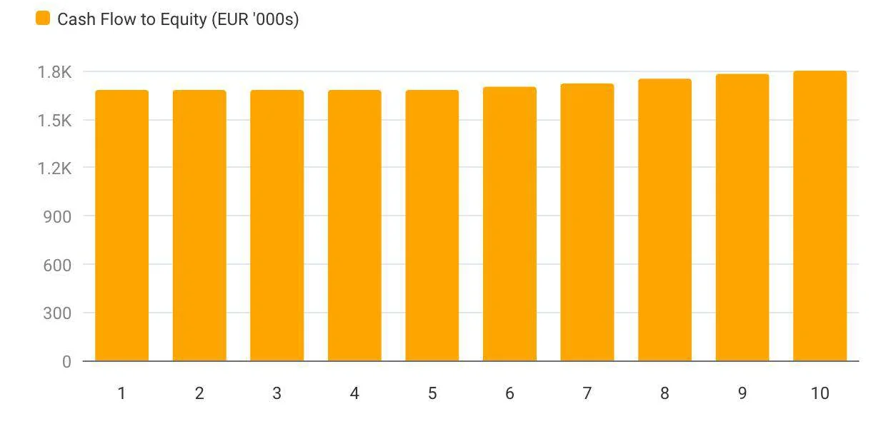
10-year revenue and EBITDA trends10-Jahres-Umsatz- und EBITDA-Trends
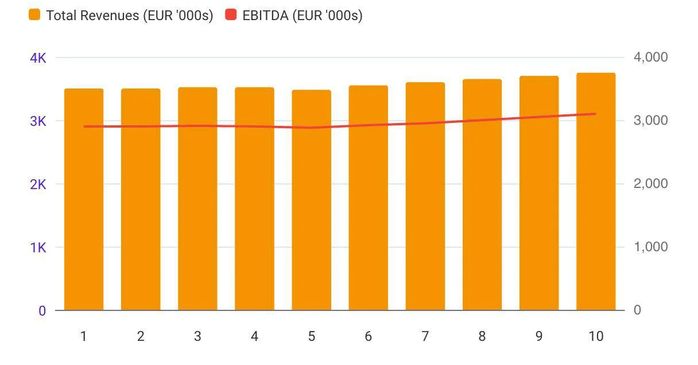
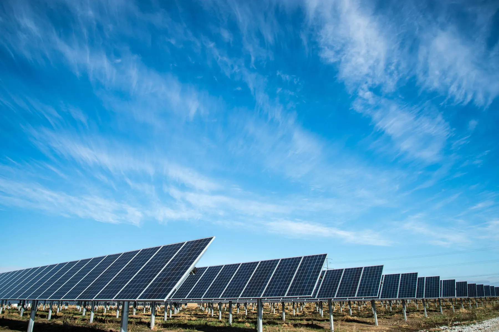
Immediate Cash FlowUnmittelbarer Cash Flow
Exclusive KÁT Entitlements – Protected ReturnsExklusive KÁT-Vergütungen – geschützte Erträge
Scalable PortfolioSkalierbares Portfolio
Supportive Tax EnvironmentUnterstützendes steuerliches Umfeld
| Risk CategoryRisikokategorie | Key ExposureWichtigste Exposition | LevelHauptrisikostufe | Mitigation & SafeguardsAbschwächung & Schutzmaßnahmen |
|---|---|---|---|
| Regulatory Risks (KÁT-specific)Regulatorische Risiken (KÁT-spezifisch) | Potential legislatory changesMögliche Gesetzesänderungen | LowGering | Long-term KÁT stability; alternative models (PPA, METÁR, merchant) in placeLangfristige KÁT-Stabilität; alternative Modelle (PPA, METÁR, Merchant) sind vorhanden |
| Technical RisksTechnische Risiken | Operational difficulties, maintenance issuesBetriebsschwierigkeiten, Wartungsprobleme | LowGering | Extensive operational know-how; established maintenance protocolsUmfassendes betriebliches Know-how; etablierte Wartungsprotokolle |
| FX RisksFremdwährungsrisiken | Foreign Exchange Exposure – EURHUF rate fluctuationsEURHUF-Kursschwankungen | MediumMittel | Factoring Arrangement; Hedging strategies; Indexation of project cash flows*Factoring-Vereinbarung; Absicherungsstrategien; Indexierung der Projekt-Cashflows* |
*Managing Currency Exchange Rate Risk for Climate Solutions – Climate Investment Funds (2023)
Combining 25+ years of entrepreneurship with direct renewable energy experienceKombiniert über 25 Jahre unternehmerische Erfahrung mit direkter Erfahrung im Bereich der erneuerbaren Energien
„I aim to combine my extensive experience in the plastic industry with my dedication to renewable energy. This project will be both a profitable investment and a vital step towards sustainability and environmental responsibility.”„Ich möchte meine umfangreiche Erfahrung in der Kunststoffindustrie mit meinem Engagement für erneuerbare Energien kombinieren. Dieses Projekt wird sowohl eine rentable Investition als auch ein wichtiger Schritt in Richtung Nachhaltigkeit und Umweltverantwortung sein.”
Successfully managing this solar park since 2022, providing valuable hands-on experience with KÁT system operations and maintenanceErfolgreiches Management dieses Solarparks seit 2022 mit wertvoller praktischer Erfahrung mit dem Betrieb und der Wartung von KÁT-Systemen
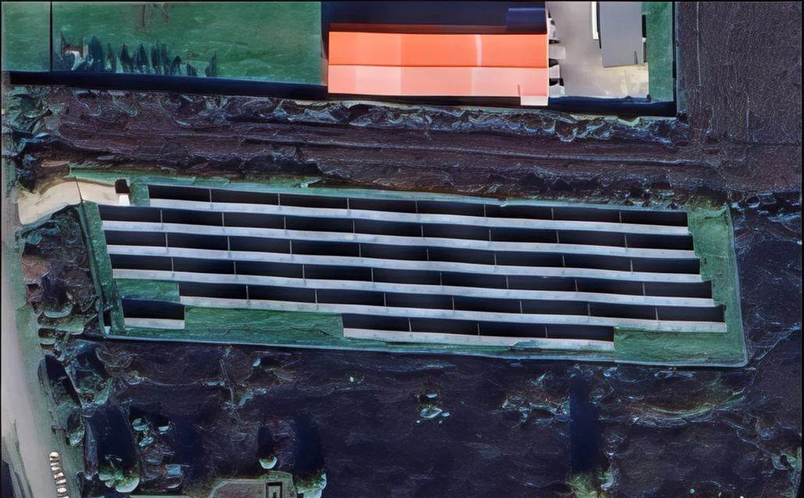
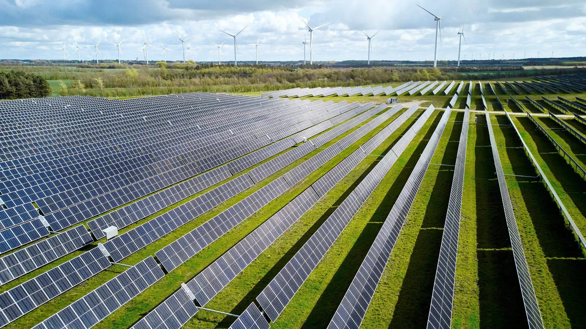
Investors acquire shares in Euro Solar Energy Zrt., which acquires a Target Company that owns all KÁT Solar Parks. Revenues generated by solar parks flow directly to the Target Company and then upstream to the holding entity, enabling annual dividend distributions to shareholders.Investoren erwerben Anteile an der Euro Solar Energy Zrt. und diese erwirbt eine Zielgesellschaft, die alle KÁT Solarparks besitzt. Die von den Solarparks erwirtschafteten Erträge fließen direkt an die Zielgesellschaft und dann weiter an die Holdinggesellschaft, so dass jährliche Dividendenausschüttungen an die Aktionäre möglich sind.
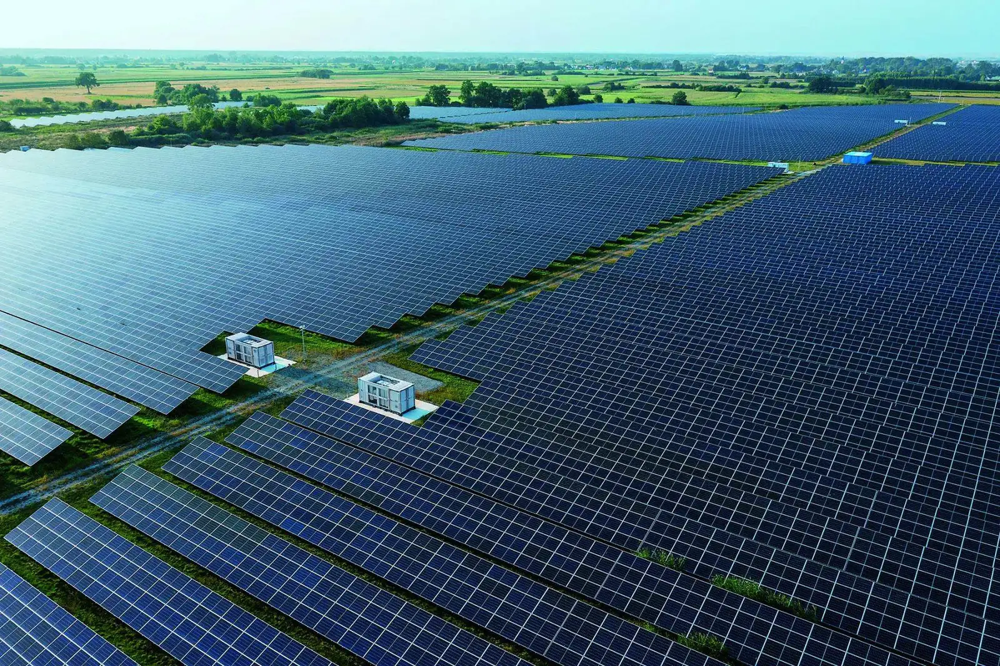
METÁR¹ offers a premium-based alternative to KÁT system with continued market viabilityMETÁR¹ bietet eine prämienbasierte Alternative zum KÁT-System mit anhaltender Marktfähigkeit
Direct power purchase agreements with large corporations ensure premium pricing and reduced volatilityDirekte Stromabnahmevereinbarungen mit großen Unternehmen sichern Premiumpreise und geringere Volatilität
Connect battery storage to KÁT parks to store energy during grid limitations and sell at higher night rates (5-10x premium)Anschluss von Batteriespeichern an KÁT-Parks, um Energie während Netzbegrenzungen zu speichern und zu höheren Nachttarifen zu verkaufen (5-10x Aufschlag)
Hungary targeting approximately 1 GW of energy storage by 2030²Ungarn will bis 2030 etwa 1 GW an Energiespeichern installieren²
¹ Hungary’s Renewable Energy Support Scheme since 2017 · ² based on Hungary’s National Energy and Climate Plan¹ Ungarns Förderprogramm für erneuerbare Energien seit 2017 · ² Basierend auf Ungarns Nationalem Energie- und Klimaplan
KÁT solar parks represent a rare opportunity to invest in stable, government-backed cash flows within a mature and regulated framework.KÁT-Solarparks stellen eine seltene Gelegenheit dar, in stabile, staatlich gesicherte Cashflows innerhalb eines ausgereiften und regulierten Rahmens zu investieren.